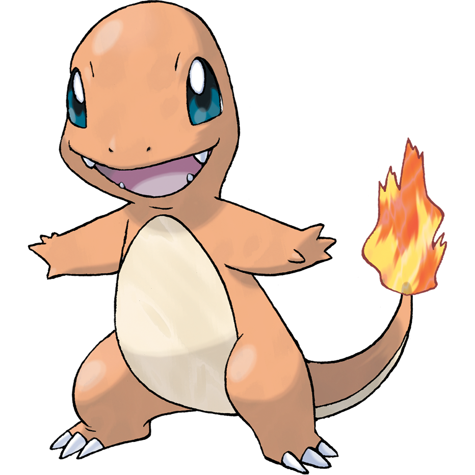
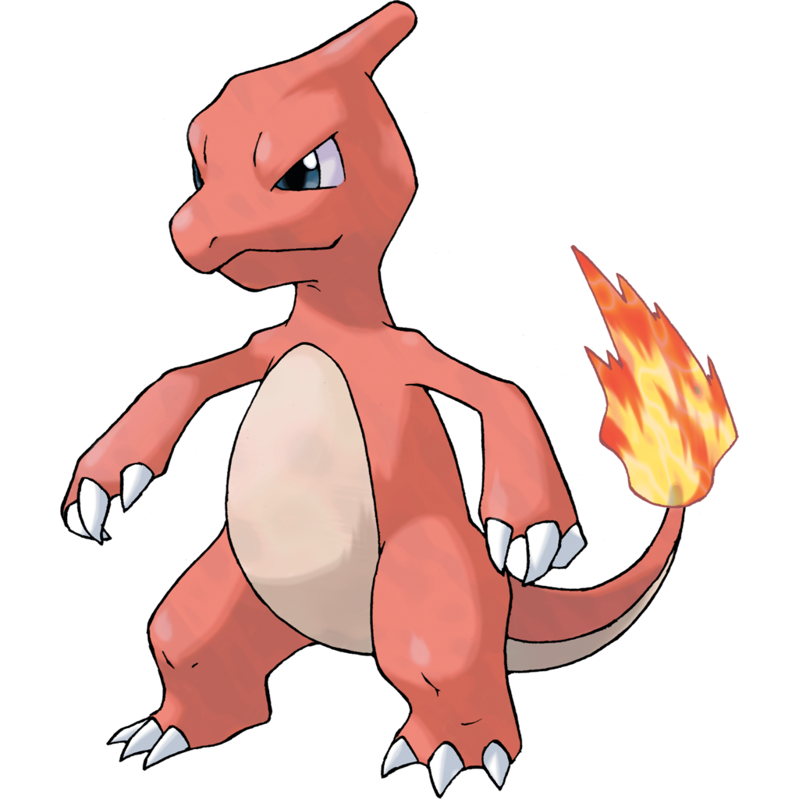
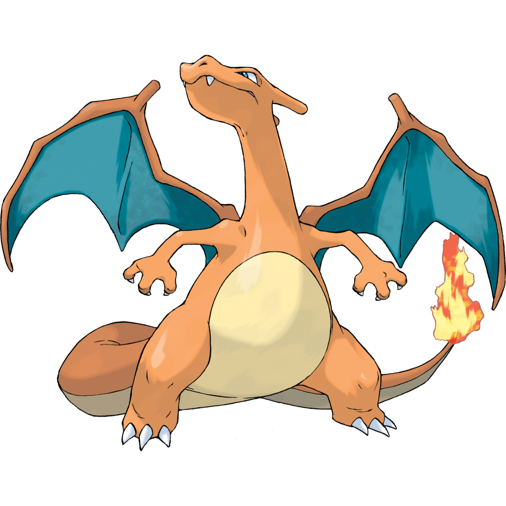

Pokemon Evolution Guide
Evolution is a process that allows many Pokemon to transform into a new form. When a Pokemon evolves, its appearance changes and it will usually become stronger by gaining improved stats. Some Pokemon may also gain a new type or abilities after evolving.
Not every Pokemon evolves in the same way. Some evolve by reaching a certain level, while others require special items, friendship, trading, or other specific conditions. Some Pokemon can evolve more than once, creating an evolution line with multiple stages.
Evolution Example
One of the most recognizable evolution lines begins with Charmander. As it gains experience and levels up, it can eventually evolve twice before reaching its final form, Charizard.
Charmander Evolution Line

Charmander - Starting Pokemon

Charmeleon - Evolves from Charmander at level 16

Charizard - Evolves from Charmeleon at level 36
Charmander → level 16 → Charmeleon Charmeleon → level 36 → Charizard
Different Ways Pokemon Evolve
Leveling up is one of the most common ways for a Pokemon to evolve, but it is not the only method. Different Pokemon may require different conditions before they can reach their next form. Understanding these conditions helps trainers know when and how a Pokemon can evolve.
Level Evolution
Many Pokemon evolve after reaching a specific level. Charmander, for example, evolves into Charmeleon at level 16, and Charmeleon evolves into Charizard at level 36. Once the required level is reached, the Pokemon can evolve into its next form.
Item Evolution
Some Pokemon require a special evolution item instead of reaching a certain level. Evolution Stones are one example of these items. When the correct item is used on a compatible Pokemon, it can trigger its evolution.
Friendship Evolution
Some Pokemon evolve after developing a high level of friendship with their trainer. Friendship can increase as the Pokemon travels and battles with the trainer. Once enough friendship has been built, certain Pokemon can evolve when they level up.
Trade Evolution
Some Pokemon evolve when they are traded from one trainer to another. Certain Pokemon may also need to hold a specific item while being traded before they can evolve, making trading part of their evolution requirement.